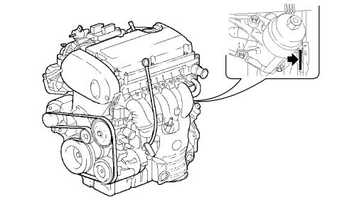
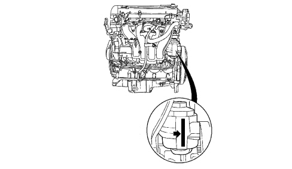

ENGINE MARKING POSITIONING
- Path
- Technical Data > CAR GENERAL FEATURES > IDENTIFICATION PLATES > ENGINE MARKING POSITIONING
- Kind
- technical data / specifications
- Applies to
- all engines; all production periods
- Interactive page
- https://sloeber94.github.io/elrnDB/#/939003191
Applies to: all engines; all production periods
1.8 Engine

1.9 JTS - 2.2 JTS Engines
The engine marking is stamped on the flat part of the engine oil filter case.

3.2 JTS Engine
The engine marking is stamped on the cylinder block/crankcase, gearbox side, near the starter motor.

1.9 JTD 8V Engine

1.9 JTD 16V - 2.4 JTD 20V Engines
The engine marking is stamped on the cylinder block/crankcase, gearbox side.